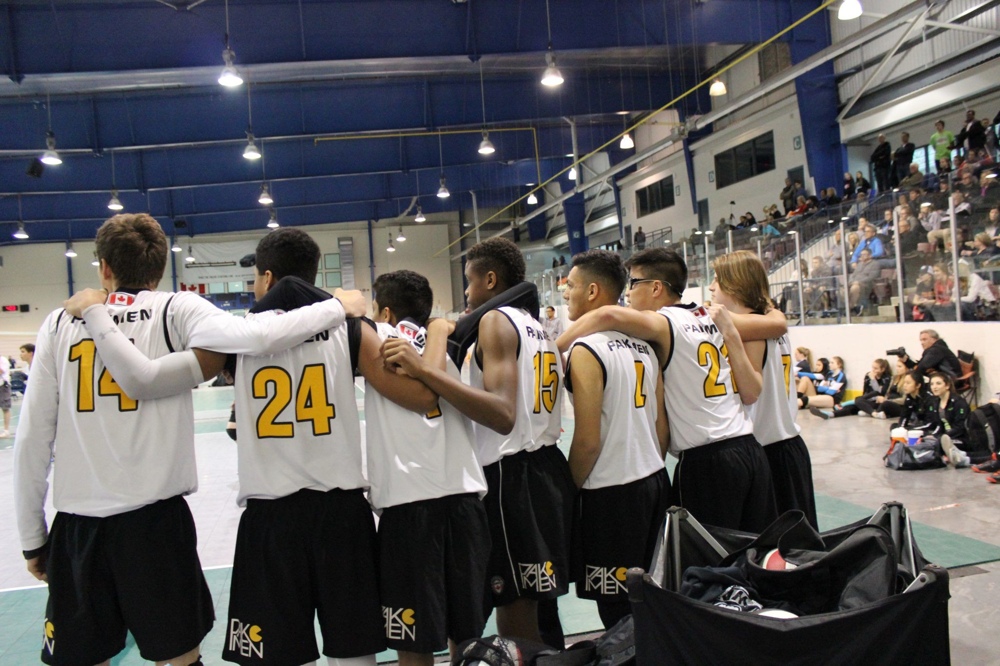
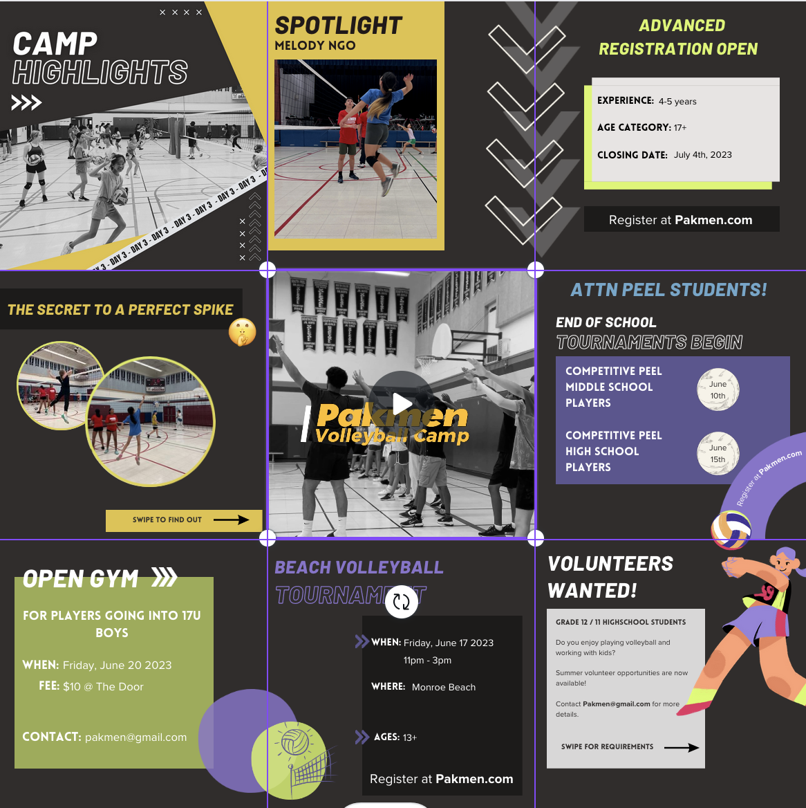
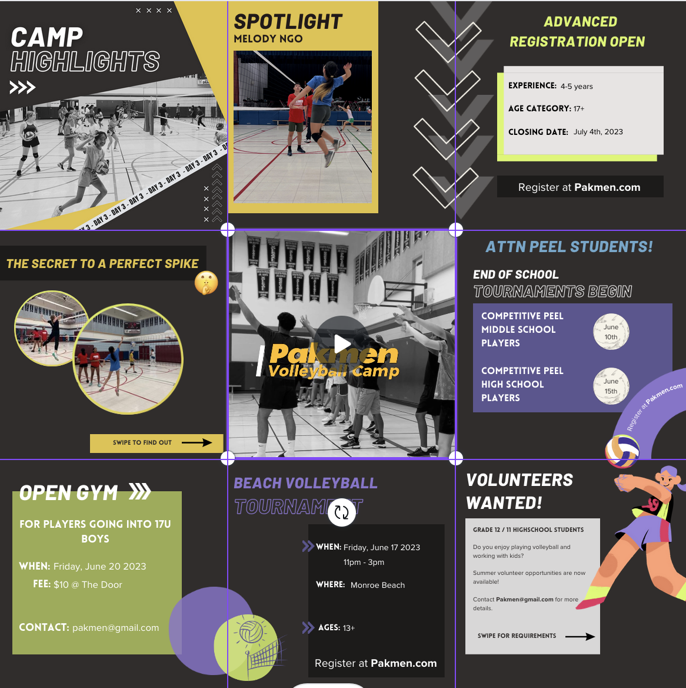

Pakmen Volleyball
Role
Tools
Timeline
Overview
Pakmen Volleyball is a prominent organization that focuses on creating a dynamic and engaging community for volleyball enthusiasts. As the Social Media Coordinator, I contributed to managing event promotions, creating visually appealing content, and ensuring timely communication across various platforms. This role required a strong understanding of digital media tools and an ability to effectively engage with the target audience. The experience was incredibly fulfilling and helped me grow as a professional in the social media space.
My Work
UNDERSTANDING THE BRAND
After my first week at Pakmen, I realized the club stood out from others in the GTA by supporting youth from all backgrounds in an engaging way, regardless of skill level. The club brought people together through their shared passion for volleyball, and not only gave youth a physical outlet but also provided mentors to support their personal growth. I focused on building a connection with the audience and used storytelling to showcase the club’s diversity, unique programs, and strong sense of community, with the goal of attracting more people to the Pakmen courts.
SHOWCASING THE POSSIBILITIES
I started off by showing the team what was possible by creating a mockup of an overlapping Instagram grid and recreating common posts. I focused on developing their brand by creating a cohesive colour scheme, typography, and dynamic graphics and photos.
 
